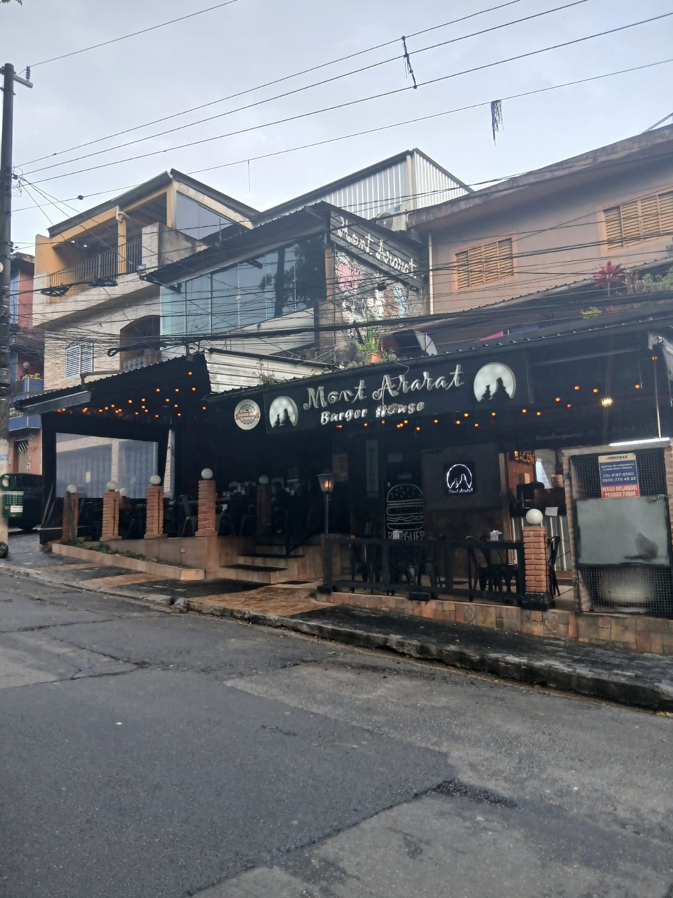
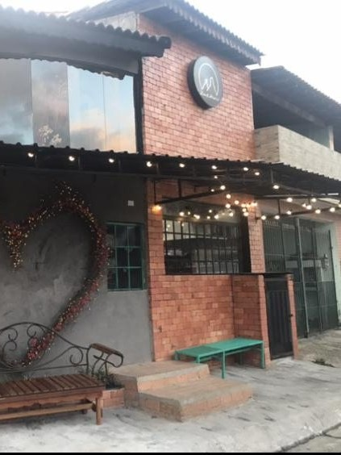

Nossos Locais
Descubra qual Mont Ararat está mais próximo de você.

Unidade São Mateus
A sede principal do Mont Ararat, localizada no bairro de São Mateus, em São Paulo.
Endereço:
R. Vercínio Pereira de Souza, 1199
São Mateus, São Paulo - SP, 03945-000

Unidade Suzano
A segunda unidade do Mont Ararat, localizada no município de Suzano, em São Paulo.
Endereço:
R. Catarina Parente Irente, 663
Jardim Luella, Suzano - SP, 08616-280
Unidade Mogi das Cruzes
A terceira unidade do Mont Ararat, localizada no município de Mogi das Cruzes, em São Paulo.
Endereço:
R. Francisco Lamas, 207
Jardim Armenia, Mogi das Cruzes - SP, 08780-790